CylinderLeakageTesting cylinder leakage models |
|
Diagram
{kind=link}
Information
This information is part of the Modelica Standard Library maintained by the Modelica Association.
Test of one source and cylindrical components with leakage and various sensors.
Parameters (1)
| mu_rConst |
Value: 100 Type: RelativePermeability Description: Relative permeability |
|---|
Components (13)
| quarterCylinder1 |
Type: QuarterCylinder |
|
|---|---|---|
| hollowCylinderAxialFlux1 |
Type: HollowCylinderAxialFlux |
|
| hollowCylinderAxialFlux2 |
Type: HollowCylinderAxialFlux |
|
| quarterCylinder2 |
Type: QuarterCylinder |
|
|  | constantSource |
Type: ConstantMagneticFlux |
| ground1 |
Type: Ground |
|
| hollowCylinderAxialAir1 |
Type: HollowCylinderAxialFlux |
|
| hollowCylinderAxialAir2 |
Type: HollowCylinderAxialFlux |
|
| magneticPotentialSensor |
Type: MagneticPotentialSensor |
|
| magneticPotentialDifferenceSensor | ||
| magneticFluxSensor |
Type: MagneticFluxSensor |
|
| referenceSensor |
Type: ReferenceSensor |
|
| frequencySensor |
Type: FrequencySensor |